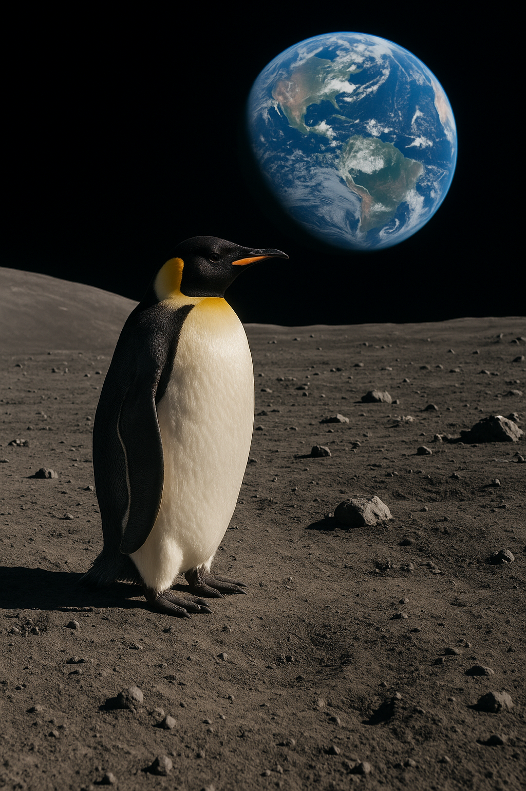

Websites That Fuel My Learning & Creativity
My Digital Toolkit & Inspiration
Continuous learning is essential for growth. Below is a curated collection of platforms I rely on for
technical documentation, industry trends, and the personal interests that keep my creativity sharp.

- Google - Research & Discovery
- YouTube - Educational Content & Tutorials
- Penguin Tracker - Environmental
Awareness
- Reddit - Community Discussions
- W3schools - Syntax Reference
- Current Moon Phase
(Home) - Perspectives
- NASA - Science & Innovation
- OpenAI - AI Development